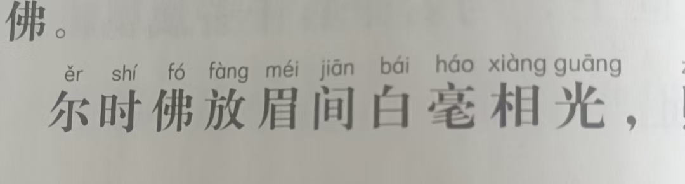
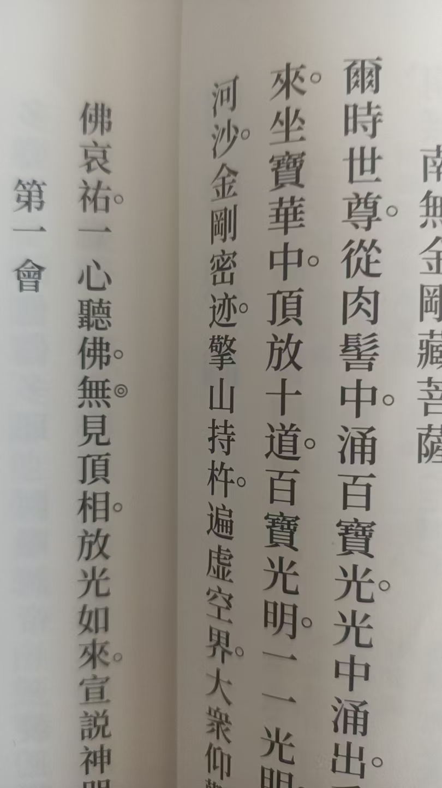

20260628佛经中的放光
符咒术法 原始对话记录
注意细节
这里是眉间放白毫相光
眉间，就是印堂，天目穴
天目，不是天眼
佛说观无量寿经，也是天目放光，

楞严经是从肉髻中
肉髻在额头上方
还有一部经，是从顶中
头顶心
百会
这个放光是真放光
开肉眼，人人看得到
以下为编者整理的主题文章
编者整理 · 主题文章
光从哪个地方出来
导读：这一页话不多，几张图，配几行字。说的是佛经里放光的位置——眉间，肉髻，顶门。位置不同，出处也不同。留下一句：这个放光是真放光，开肉眼，人人看得到。
这一页话不多。几张图，配几行字。图上是经文，字是批注。批注都短，最短的只有三个字，注意细节。
第一行是，注意细节。这里是眉间放白毫相光。
接着解释，眉间，就是印堂，天目穴。然后补一句，天目，不是天眼。
我在这一句上停了停。印堂在两眼之间。写经的人把这个位置挑出来，光就从那儿出来。
又说《佛说观无量寿经》，也是天目放光。
再往下换了一处。《楞严经》是从肉髻中。肉髻在额头上方。我抬手在额头上比了比，往上一点，是发际那一带。
还有一部经，是从顶中。头顶心，百会。
三处。眉间，肉髻，顶门。一个一个往上走。
这一页的最后一句话是——这个放光是真放光，开肉眼，人人看得到。
我把这句读了两遍。以前的读法，放光两个字念过去就过去了。这一句说，光有一个具体的出处，落在身上，是能指认的地方。眉间一按就是，头顶一摸就是。
所以我把这三处记了下来。下回读经读到放光，先在心里把位置摆好。光从印堂、从额上、从头顶出来。
另一次整理里，有人把《楞严经》《法华经》《金刚经》三本的放光段落并排抄了一遍。那边讲的是光的走法，光怎么灌顶、怎么照远。这一页只讲一件事，光从哪儿出来。至于别的，这一页没有再说。
说明与免责：本站为民间修炼、民俗文化与传统文化资料的整理与记录，内容源自传承者口传与个人修习体会，仅供文化交流与研究参考，不构成医疗、健康、投资或任何功效承诺。所述内容属传统术数范畴，请理性看待；如身体不适，请及时就医。请遵守法律法规与公序良俗。